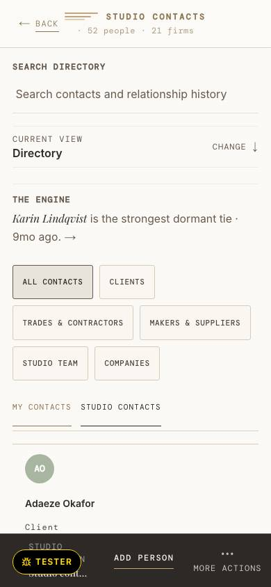

frame-people-t3 · today, 390 · People at 390: the boxed filter tabs wrap onto three rows before the first contact; the dock label is ellipsised.

Walk screenshot of the local seed (SQ-800); its names are walk data. The proposed frames use the fixture. Illustrative fixture · Hartwell Studio is invented
frame-people-p3 · proposed, 390 · p1 on Leah’s phone: rows stack name, role, state words, phone; the filter words wrap; the dock label wraps in full. No filled act. Depends on U-Q13, U-Q15.
Studio contacts
Inbound · Monday 12 October
A web inquiry: a living room, budget $40–60k. “We just moved in and the living room is empty except for a piano.”Open the brief
Directory · by surname
Calloway & Brandt UpholsteryW-9On paperCOINot asked
On paper
On paper
Hollis ElectricW-9On paperCOIOn paperto 31 March 2027
On paper
Ninebark LightingW-9Not asked
Fenmoor JoineryW-9On paperCOIOn paperEmail first. Call for anything over $2,500.
Juniper Stone & TileCOINot on fileBlocked: may not start on site until a COI is on file.
Marks at rest: today 14 · 9 · 5 · 28 · proposed measured at render
- 1 The Header line wraps to two rows; “＋ Add” keeps the accessible name “Add contact”. (uplift (b) 6)
- 2 Inbound first, closed. Its row stacks: name, role, the inquiry in full, the time, Open the brief at 44 px. (D2 area 4)
- 3 Directory rows stack name / role / state words / phone; every word wraps and nothing is ellipsised. (SPEC §2.2 people p3)
- 4 Blocked stays terracotta-ink with its sentence: COI NOT ON FILE, “may not start on site until a COI is on file”. (U-Q13)
Illustrative fixture · Hartwell Studio is invented